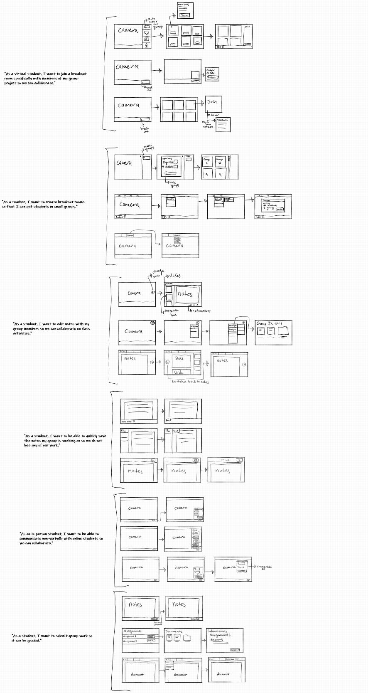

Update from Milestone 2
Following Milestone 2 we realized we needed to narrow our scope. Our previous problem was too broad, and did not focus on the “in-person learning” theme as much as we wanted. Our previous problem could be summarized by the line from our previous milestone.
Hybrid learning creates unfair opportunities for in-person and hybrid students because of how it diverts attention away from one group in order to accommodate the other.
Based on this problem, our solutions ranged from physical hardware, to a redesigned virtual classroom, to multiple changes to the status quo for how this hardware and software would be integrated. It was impossible for our team to give each part of our problem the focus needed to design a solution so we came to the conclusion that we needed to rethink our problem.
We began by identifying the problem associated with hybrid learning and created this list.
- Visibility and audio issues
- Disengagement of virtual students
- Poses difficulties doing group work
We decided to focus on problem 3, that is, how hybrid learning hinders group work. We choose this problem to focus on because collaboration is a crucial part of classroom learning. Creating and managing efficient breakout rooms was also a part of our original proposed solution so we already understood the problems that arise from collaborative learning in a hybrid setting and are excited to further focus on developing solutions for them.
Now, our problem scope has been successfully narrowed down to:
Hybrid learning creates difficulties for students participating in in-class group work.
A. User Experience Requirements
1. User Stories
User Stories organized by related task:
- Taking notes
- "As a virtual student, I want to have a copy of the lecture/slide notes so that I can guide my note taking."
- "As a student, I want to have access to the lecture notes before, after, and during class so I can prepare, follow along, or review."
- "As a student, I want to share notes with my group members so we can collaborate on class activities."
- "As a student, I want to quickly save documents the group worked on so we do not lose any progress."
- Watching live lectures
- "As a student, I want to hear the instructor so I can learn what they are teaching."
- "As an online student, I want to know when I am muted or unmuted so I can be sure I am not disrupting class."
- "As a virtual or face-to-face student, I want to be able to ask questions, or wait for the professor to see me."
- Joining Breakout Rooms
- "As a virtual student, I want to join a breakout room specifically with members of my group project so we can collaborate."
- "As a virtual student, I want to be able to turn my microphone on, so I can hear my group members and discuss with them."
- "As a student, I want a shared set of notes for the breakout group so that we can collaborate on it and share it with the class later."
- Giving a live lecture
- "As a lecturer, I want to be audible to my students so they can learn from my lecture."
- "As a lecturer, I want my students to see my slides on their computer so they can see them easily."
- "As a lecturer, I want my voice to be the only one heard by students unless a student is asking or answering a question so that my lecture is clear and not covered by other voices."
- "As a lecturer, I want to control what microphones my voice is coming from so I can choose to talk to the whole class, to a breakout group, or to a specific student."
- "As a lecturer, I want to know when a student has a question so I can better answer it."
- Assigning breakout rooms
- "As a teacher, I want to create breakout rooms so that I can put students in small groups."
- "As a teacher, I want to make breakout groups that my student can join."
- "As a teacher, I want to control who is in what breakout group so I can assign specific students to specific groups."
- "As a teacher, I want to end breakout groups so I can stop small discussions and start classroom discussion."
- Discussion in class
- "As a lecturer, I want to control the volume of the online students so I can hear them when they are talking."
- "As a face-to-face student, I want to control my microphone level so online students can hear me."
- "As a user, I want the ability to send text messages to the class and teacher if my microphone is muted."
- "As a face-to-face student, I want to be able to mute the chat in case it becomes distracting."
- "As an instructor, I want to be able to turn on and off the class chat so I have better control of my students’ attention."
- "As a face-to-face student, I want to unmute the chat and still see the previous messages so I do not miss any of the discussion. "
2. Relevent User Stories
Our choosen user stories:
- "As a virtual student, I want to join a breakout room specifically with members of my group project so we can collaborate."
- "As a teacher, I want to create breakout rooms so that I can put students in small groups."
- "As a student, I want to edit notes with my group members so we can collaborate on class activities."
- "As a student, I want to be able to quickly save the notes my group is working on so we do not lose any of our work."
- "As an in-person student, I want to be able to communicate non-verbally with online students so we can collaborate."
- "As a student, I want to submit group work so it can be graded."
When we first created our user stories, we were intimidated by the possible scale of the project we were attempting. Despite having a large quantity of user stories, we felt that almost all of them were relevant to our broad problem. Narrowing down our problem scope, however, greatly helped when choosing the most relevant user stories to focus on.
We eliminated the user stories for “watching live lectures” and “giving live lectures” because we felt it was not relevant to our problem scope. Our emphasis had shifted away from ensuring virtual students were getting the same educational experience as face-to-face students, to wanting to give face-to-face students the same benefits that online students had, with a heavy emphasis on improving group collaboration. User stories resulting from wanting to watch or give live lectures were therefore no longer related to this problem.
We primarily choose user stories related to tasks and activities related to group collaboration. This resulted in a majority of our user stories coming from the task categories “taking notes” and “assigning breakout groups” because breakout groups are a . Breakout groups are commonly used for short discussion periods during classrooms, typically lasting a few minutes before the teacher ends them to continue lecturing. We wanted to challenge this status quo and turn breakout rooms into a tool for group collaboration with consistent members. A similar feature was implemented by Zoom in their 5.10.1 version, released March 28, 2022, which allows teachers to manage breakout rooms by reusing the same groups. The implementation of this shows that there is a demand for using breakout groups as a tool for group collaboration so we choose to focus on user stories relevant to this task.
Collaboration, even in breakout groups, is still hindered by the struggle to communicate with peers in a hybrid setting. Because this is a persisting problem, we also choose user stories relevant to how students can communicate non-verbally during a breakout session. Looking at our tasks, the user stories most relevant to the issue of communication are under “Discussion in class”. The majority of these user stories, however, are for users who are attending a live lecture, either in-person or virtually. We applied these user stories to students in a breakout group and found that there was a lot of overlap. Going off of that, we created new user stories to accurately demonstrate how users in a breakout group would want to communicate with their teammates and included those in our chosen relevant user stories.
B. Ideation and Preliminary Designs
Ideas
- "As a virtual student, I want to join a breakout room specifically with members of my group project so we can collaborate."
- Webpage with central note slide for the presentation, thumbnails for displaying group names and for selecting breakout group numbers, chat box, text and draw editors, screen sharing application
- Webpage with just group members and names in boxes, and chat function
- Page that includes boxes of breakout groups, and presents “join now!” buttons with names of everyone in buttons
- Webpage that makes you type in a code to join group
- Search bar for searching for a breakout group with a specific team name
- Seperate pages for in-person vs online student that have different affordances based on what they need (in-person students may not need their cameras on
- "As a teacher, I want to create breakout rooms so that I can put students in small groups."
- From class screen, can click button to begin making groups; can choose number of students in each group and whether to manually assign students or let students choose; groups are then created based on number of students in class and students per group
- Teacher view includes a button that can be linked to preset options so the teacher can just click the button to make breakout groups.
- Have different preset options available to teachers at the click of a button, but also include the option of creating new presets.
- Include a drop down menu that leads to breakout room options where the teacher can edit groups, number of groups, number of students in groups, and who is in what group.
- "As a student, I want to edit notes with my group members so we can collaborate on class activities."
- Include a screen with the shared slides from the lecture where students can collaborate on notes.
- Tabs for moving over to a Google-Docs style shared note taking screen.
- Include options for notes to be saved as a local copy on the user’s device.
- Include a screen for class slides, as well as a blank document for taking notes. There should also be a way to quickly swap between these two views.
- "As a student, I want to be able to quickly save the notes my group is working on so we do not lose any of our work."
- The user can use common “hot-keys”, such as Ctrl-S to quickly save their work.
- The user can save the document as a local copy on their device that includes any changes made to the document.
- The user can navigate through a top menu bar to access a save option.
- The document editing screen can include a button that can be clicked on to save the document.
- Include autosave ability so users do not need to save their work manually.
- "As an in-person student, I want to be able to communicate non-verbally with online students so we can collaborate."
- Include a chat function that can be used to communicate with other students in the same virtual classroom.
- Include a chat button in a sidebar that brings up a chat box.
- Have a text box in a bottom menu bar so users do not need to bring up a dedicated chat box and can instead quickly type their message and send it.
- Have a floating button that users can click on to bring up a chat box. The user can also drag and move the button and chat box so it does not interfere with their work.
- "As a student, I want to submit group work so it can be graded."
- Include a submit button on the bottom corner of the document viewing page.
- The user can navigate to the assignments page, choose which assignment to submit, then choose which document to submit for the assignment.
- The submit option can be found by navigating through menus in a top menu bar.
Wireframes
We started by making low fidelity sketches in a shared Whiteboard document, then moved on to making more refined wireframes in Figma. We choose our top wireframes from the Whiteboard sketches to be made in Figma.

Figma Wireframes